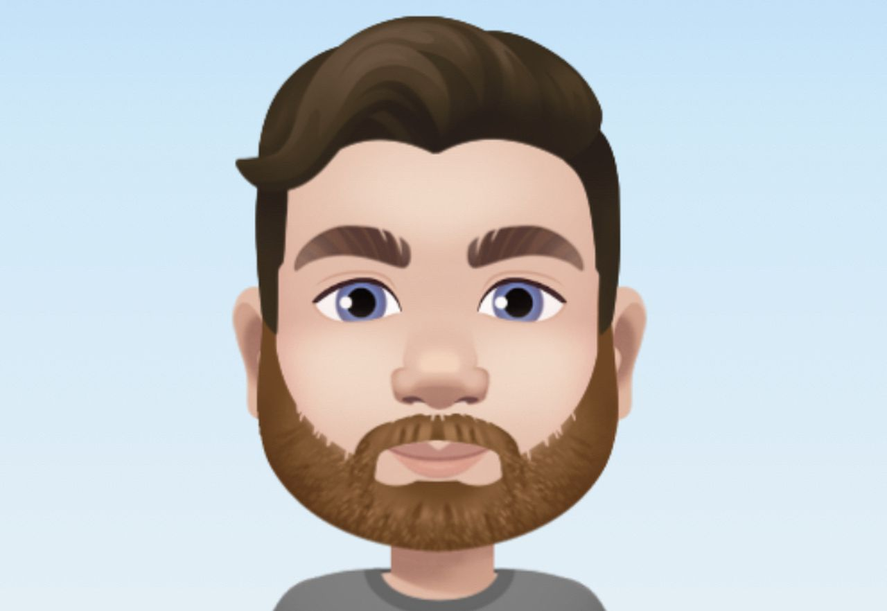

<ion-app>
  <ion-menu menuId="main-menu" contentId="main">
    <ion-content>
        <div class="menu-header-bg"></div>
        <div class="header-content">
        
        <ion-label>
          <h2> User </h2>
          <h2> SwingApp  </h2>
        </ion-label>  
        </div>


        <ion-list class="menu-items" lines="none">
          <ion-item>
            <ion-icon name="create-outline"> </ion-icon><a href="home"> New Task</a>
          </ion-item>

          <ion-item >
            <ion-icon name="people-outline"></ion-icon> <a href="show-users"> Show all users</a>
          
          </ion-item>

          <ion-item >
            <ion-icon name="file-tray-stacked-outline"></ion-icon><a href="show-tasks"> Show all tasks</a>
          
          </ion-item>
        </ion-list>
    </ion-content>
  </ion-menu>
  <ion-router-outlet id="main"></ion-router-outlet>
</ion-app>
